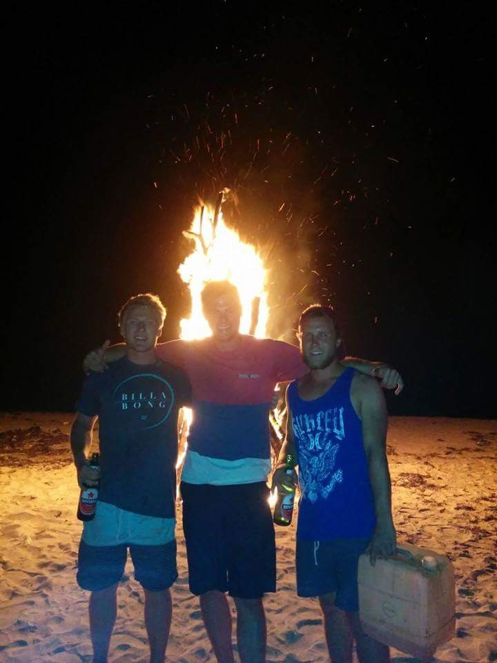

Wil, Julie,
I’m gutted I couldn’t be there.

It does not feel like that long since Bali, and Oktoberfest, and all the endless surf missions. Somehow that was a decade ago. You and Nick are married men now, I’m engaged, and I genuinely don’t know when that happened.
Julie, I’ve not had nearly enough time with you, and I’m looking forward to fixing that. You’ve got yourself one of the good ones. Wil feels everything at full volume. That’s why we love him.
Wish I could have been there to celebrate with you both. Looking forward to celebrating back in New Zealand.
Hope the day was everything you wanted it to be. Are you off somewhere after?
Luke and Rach